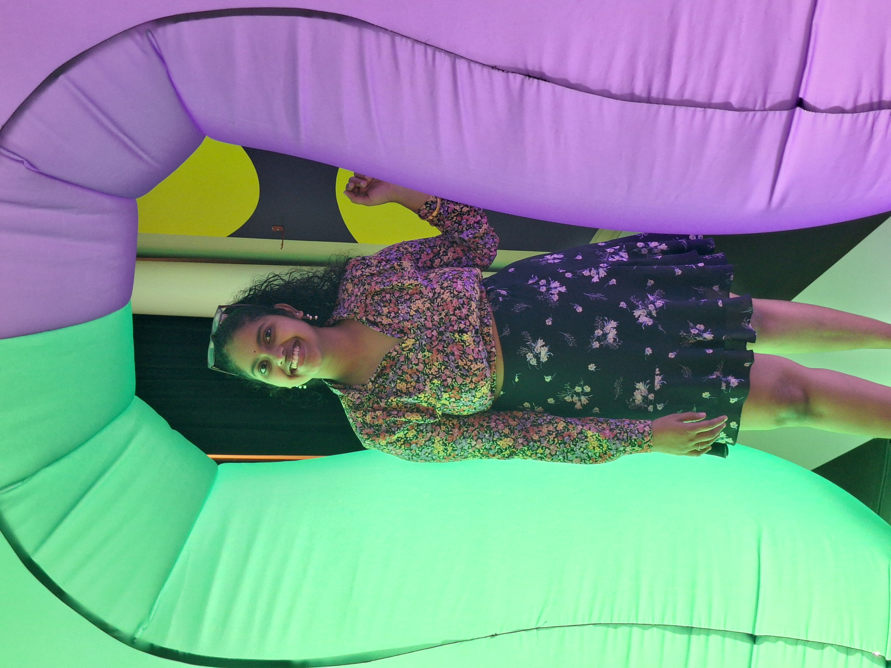

About Me
Welcome! I am a researcher focused on biochemistry, complex fluid, and soft materials. My work explores the intersection of solvent-free reactions and analytical chemistry.
Publications & Patents
Journal Publications
Thiagarajan, S., Dettman, A. and Koh, A.S., 2025. Magnetorheological fluids: Creep and recovery behavior, and effect of elastic styrene-ethylene-styrene-butylene (SEBS) bead additives. Journal of Materials Research, 40(18), pp.2654-2672.
https://doi.org/10.1557/s43578-025-01689-2
https://doi.org/10.1557/s43578-025-01689-2
Dettman, A., Thiagarajan, S. and Koh, A.S., 2024. Bead size and rheological properties of SEBS-based elastic beads. Rubber Chemistry and Technology, 97(3), pp.380-396.
https://doi.org/10.5254/rct.24.00011
https://doi.org/10.5254/rct.24.00011
Bury, E., Thiagarajan, S., Lazarus, N. and Koh, A., 2022. Ferrofluid high internal phase emulsion polymer foams for soft, magnetic materials. Journal of Magnetism and Magnetic Materials, 563, p.169921.
https://doi.org/10.1016/j.jmmm.2022.169921
https://doi.org/10.1016/j.jmmm.2022.169921
Thiagarajan, S., Price, E., Connors, L., Dettman, A. and Koh, A.S., 2022. Study of n-alkanethiol self-assembly behavior on iron particles: Effect of alkyl chain length and adsorption solvent on resulting iron-based magnetorheological fluids. Langmuir, 38(44), pp.13506-13521.
https://doi.org/10.1021/acs.langmuir.2c02014
https://doi.org/10.1021/acs.langmuir.2c02014
Thiagarajan, S. and Koh, A.S., 2021. Simultaneous thermo-magnetorheological response of magnetorheological fluids: effect of concentration and composition. IEEE Transactions on Magnetics, 57(12), pp.1-8.
https://doi.org/10.1109/TMAG.2021.3116788
https://doi.org/10.1109/TMAG.2021.3116788
Thiagarajan, S. and Koh, A.S., 2021. Performance and stability of magnetorheological fluids—a detailed review of the state of the art. Advanced Engineering Materials, 23(6), p.2001458.
https://doi.org/10.1002/adem.202001458
https://doi.org/10.1002/adem.202001458
Patents
Koh, Amanda, Emmanual Johnson, and Sandhiya Thiagarajan. "Magnetorheological emulsions and methods of making and use thereof." U.S. Patent Application 18/770,905, filed March 13, 2025.
https://patents.google.com/patent/US20250087395A1/en
https://patents.google.com/patent/US20250087395A1/en
Selected Conference Publications
Thiagarajan, S., Dettman, A., Johnson, E. and Koh, A., 2023, November. Effect of Elastic Sebs Beads As Additives on the Chain Formation of Iron Particles in Magnetorheological Fluids. In 2023 AIChE Annual Meeting. AIChE.
https://doi.org/10.1002/adem.202001458
https://doi.org/10.1002/adem.202001458
Projects & Visualizations
Project Alpha: Real-time Simulation
This GIF demonstrates the convergence of the algorithm:

Project Beta: Data Flythrough
Short video demonstration: